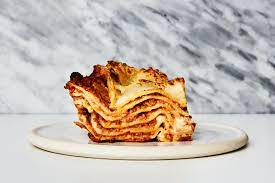

Lasagna

Lasagna origin
The Italian favorite of lasagne or lasagna that we all know and love originated in Italy in the city of Naples during the Middle Ages. One of the first references to modern-day lasagne can be found in a 14th-century English cookbook that highlighted a dish with layers of pasta without the tomatoes.
Is Lasagna good for you?
The person who invented lasagna could never have imagined how it would impact the world today and what nutritional value it contains. When discussing lasagna history, carbohydrates never tasted so good and this dish is packed full of them. Carbohydrates bring energy to your blood cells and help drive essential day to day bodily functions. Most of this energy comes directly from the noodles, with a small amount of coming from the sauce and any vegetables you add
Ingridients
- 2 olive oil
- 750g Minced ground beef
- 90g pack prosciutto
- tomato sauce
- 200ml hot beef stock
- a little grated nutmeg
- 300g pack fresh lasagne sheets
- white sauce
- 125g ball mozzarella
Steps
- To make the meat sauce, heat 2 tbsp olive oil in a frying pan and cook 750g lean beef mince in two batches for about 10 mins until browned all over.
- Finely chop 4 slices of prosciutto from a 90g pack, then stir through the meat mixture.
- Pour over 800g passata or half our basic tomato sauce recipe and 200ml hot beef stock. Add a little grated nutmeg, then season.
- Bring up to the boil, then simmer for 30 mins until the sauce looks rich.
- Heat oven to 180C/fan/160C/gas 4 and lightly oil an ovenproof dish (about 30 x 20cm).
- Spoon one third of the meat sauce into the dish, then cover with some fresh lasagne sheets from a 300g pack. Drizzle over roughly 130g ready-made or homemade white sauce
- Repeat until you have 3 layers of pasta. Cover with the remaining 390g white sauce, making sure you can’t see any pasta poking through
- Scatter 125g torn mozzarella over the top.
- Arrange the rest of the prosciutto on top. Bake for 45 mins until the top is bubbling and lightly browned.